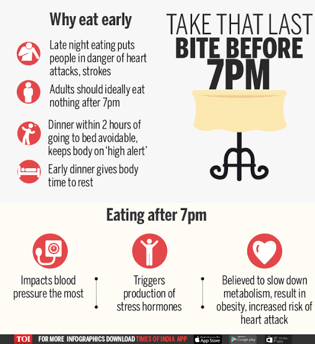

Balanced nutrition and mindful eating habits can support healing, improve energy, strengthen immunity, and help prevent chronic disease naturally.
While every individual may need personalized guidance based on their Prakriti and health condition, the following recommendations are beneficial for most people.

Reducing processed and inflammatory foods can significantly improve long-term health and wellbeing.
Samosa, Pakoda, deep fried snacks.
Chips, packaged junk foods and processed snacks.
Follow a diverse and balanced diet with natural foods that nourish the body and support healing.
Especially cucumber and seasonal vegetables.
Prefer Jowar and Ragi instead of wheat and rice.
Avoid red meat whenever possible.
How the food you eat affects your gut — watch this TED Talk on gut health.
See our evidence-backed 21-point healthy lifestyle regime published on Zenodo.
Prefer small and frequent meals at approximately 3-hour intervals during daytime.
Drink at least 2 litres of water daily to maintain healthy hydration and proper urine output.
Kaada made from spice extracts is also recommended.
Only those practitioners who consistently follow these dietary recommendations can expect meaningful clinical improvement.
For individualized dietary advice based on your health condition and body constitution, please seek a physician consultation.